Соболь Людмила Николаевна
25 января 1937 — 6 января 2021
Соболь Сергей Дмитриевич
27 декабря 1924 — 14 ноября 1999

Соболь Людмила Николаевна
25 января 1937 — 6 января 2021
Соболь Сергей Дмитриевич
27 декабря 1924 — 14 ноября 1999
Биография
Если вы попали на эту страничку, значит, вы знали моих родителей, которые покоятся на этом месте: папу — Соболя Сергея Дмитриевича — и маму — Людмилу Николаевну. Или меня, их сына Александра.
Расскажу кратко о своей семье — семье простых советских людей, но очень добрых и хороших.
Папа родом из Сумской области, трудовую жизнь начинал перед Великой Отечественной войной на сооружении московского метро, был проходчиком на станции «Семёновская», с началом войны — на строительстве подземного бункера Сталина в Куйбышеве, а в 1943 году, когда необходимость в глубоком бункере уменьшилась, попал на фронт. Фронтовое крещение получил в боях под Старой Руссой.
Получилось так, что вся оставшаяся жизнь оказалась связана с Вооружёнными силами страны, точнее с авиацией. Папа очень не любил военные рассказы и воспоминания. Пожалуй, это и не удивительно: два ранения и контузия долгие годы сказывались на здоровье, и его первый тост всегда был «За мир!». Папа всегда оставался художником, любил, как он сам выражался, «побогомазить».


Мама из «Барановичской области» — местечко Петковичи. Она старшая из детей в семье Бубнов (мой дедушка Николай Иосифович и бабушка Лидия Фёдоровна). У меня есть их фото той поры. За военное время не стало сестры Любы и брата Коли. После войны появились ещё сестричка Галя и братик Саша. Сейчас это Галина Николаевна Сафонова и Александр Николаевич Бубен, дай бог им здоровья и долгих лет.
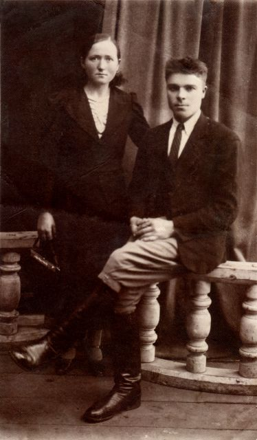
Вот выпускница Новопольского сельскохозяйственного техникума по специальности «Бухгалтерский учёт». А следующее фото мне очень нравится, по-моему, моя мама тут ещё невеста.
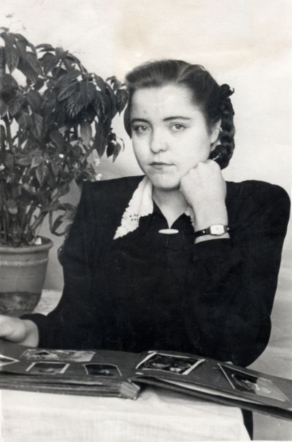
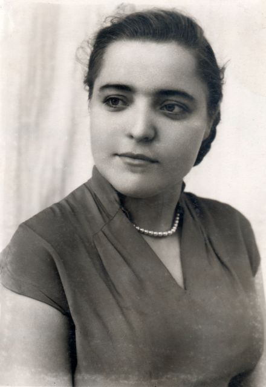
А это скромное фото – фото счастливых молодожёнов. И свадьба была скромной. Но дата почиталась в семье всегда — 13 декабря 1958 года.
Тут бы появиться и мне на фотографиях, но пока я их не подобрал. Может добавлю потом. Случилось это в Слуцке, в военном городке. Но уже в 1962 году папу перевели в Берёзу, где наша семья и осталась навсегда…
Сын Саша, то есть я, был болезненным, вечно сопливым, поэтому часто ездили к морю — лечить меня и отдыхать.
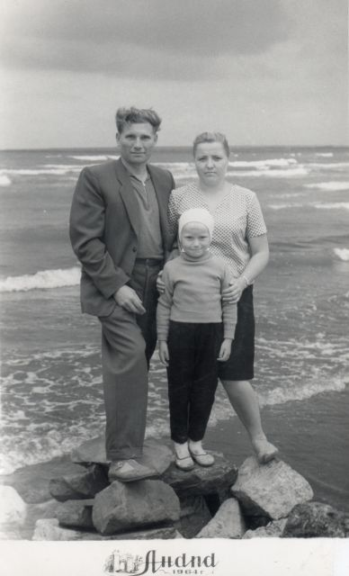
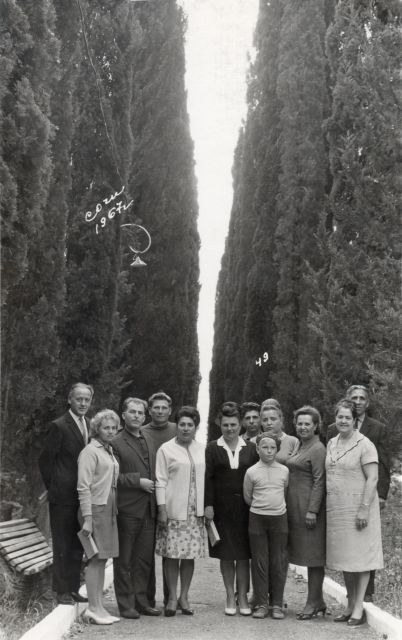
Надо сказать, что выбраться всей семьёй получалось очень редко. Но по отдельности или вместе со мной выезжали в отпуск часто. А в 1968 году побывали в Украине в Ромнах, Миргороде у папиных родственников (Соболь Василий Иванович, Анна Ивановна). Вот пара фото.
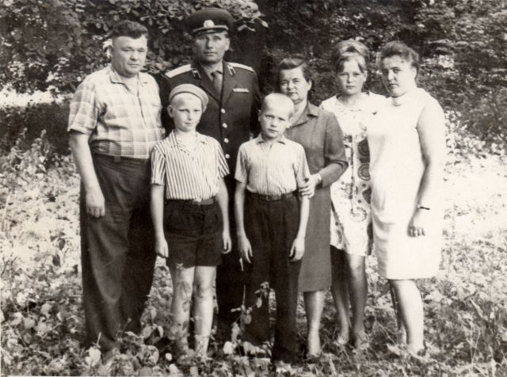
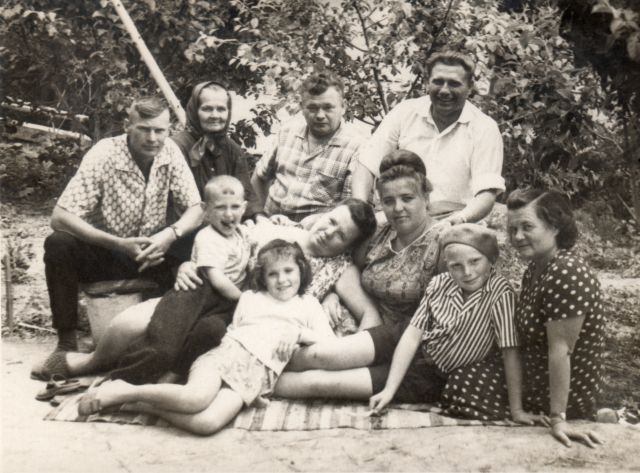
А это фото из папиной поездки в Сумы к брату Николаю Дмитриевичу в 1970 г. На фото в верхнем ряду Николай Дмитриевич с женой, а снизу — папа, Игорь Соболь и Анна Ивановна.
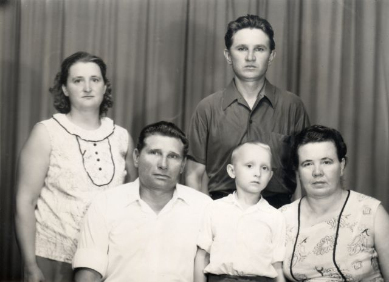
В 1971 году папа подарил мне первый фотоаппарат — «Смена-8М», с той поры семейные фотоальбомы резко потяжелели. Правда, лучшие по качеству снимки раздавались, а себе — по остаточному принципу. Пара снимков того периода.

Это около нашего ДОСа №7, 1972 г.
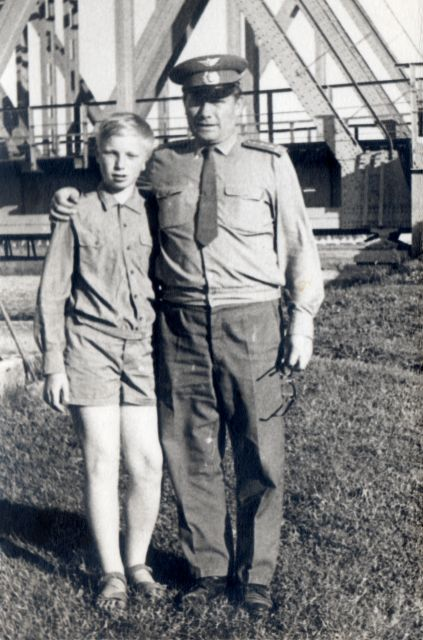
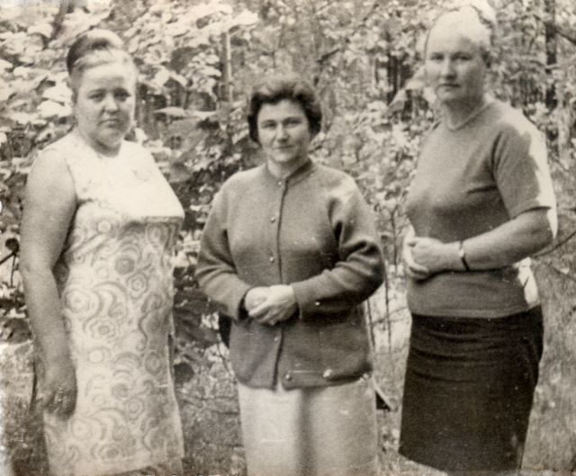
Мама большую часть жизни проработала на Берёзовском Маслосырзаводе (Сыркомбинате), пройдя путь по карьерной лестнице до заместителя главного бухгалтера (а мне помнится, что какое-то время была и главным).

Папа оставил воинскую службу в 1972 году, но без дела не сидел, поработал специалистом по кадрам, а потом изготавливал дорожные знаки в дорожной службе. В 1976 году сбылась его мечта стать автомобилистом — подошла очередь на покупку автомобиля «Москвич», и в январе в нашем дворе появился первый в городе Москвич с индексом «2140».

Наличие автомобиля открыло для нас новые возможности — поездить по стране, навещать родственников и знакомых, построить гараж и уже там детально ознакомиться с устройством «транспортного средства».
Остальные несколько фотографий я просто выложу в галерее. Там наша жизнь, появление внуков, друзья, родственники.
После ухода папы настала эра цифровых технологий, качество (и количество) материалов резко увеличилось, появилась возможность увидеть оцифрованные киноплёнки, они интересны нам и нашим родственникам — будут доступны и здесь.
Фотогалерея
То, что близко сердцу. Самые важные и дорогие моменты. Вся жизнь через памятные фотографии, которые запечатлели искреннюю улыбку, суровый и одновременно добрый взгляд, первые морщинки и седину на висках. То, что бесценно…
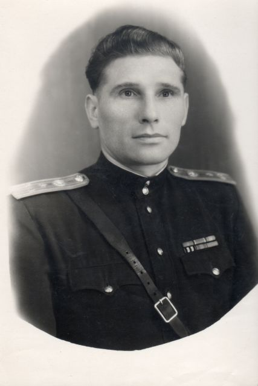

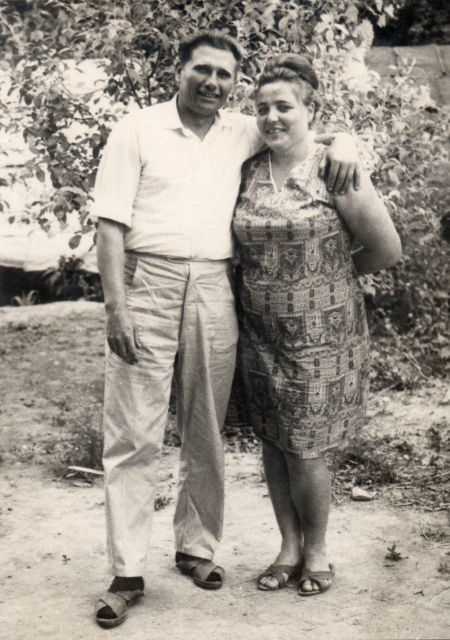
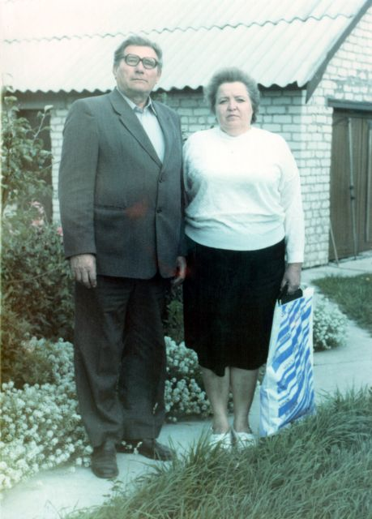
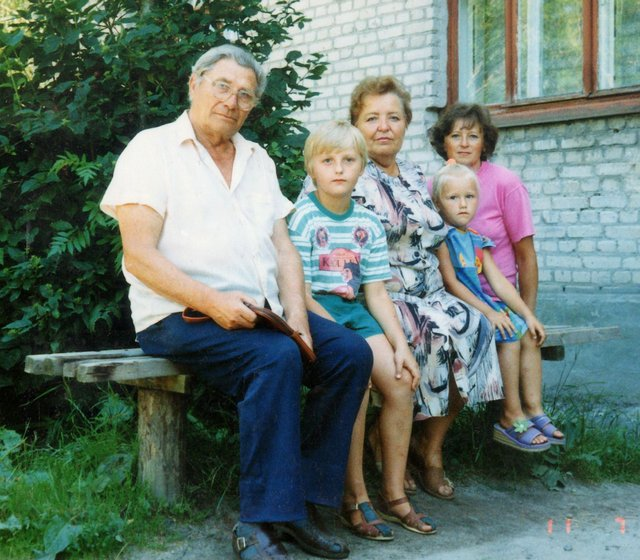
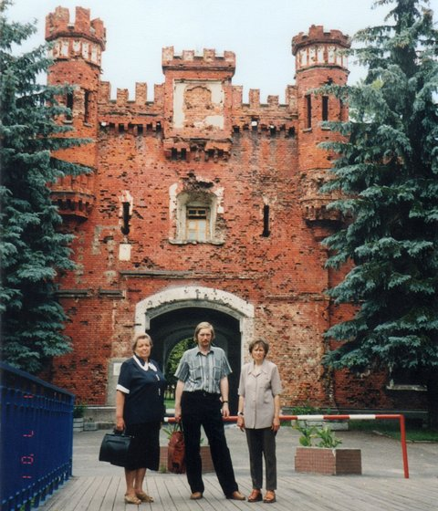
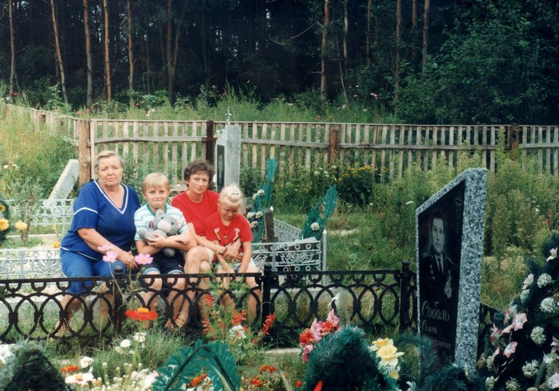